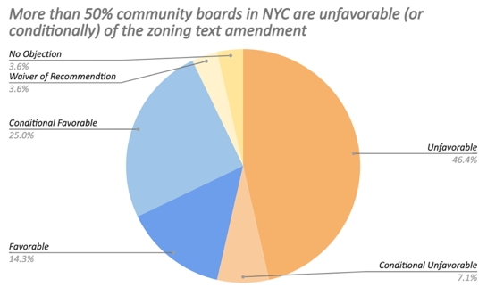
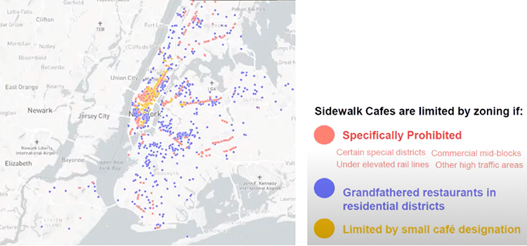
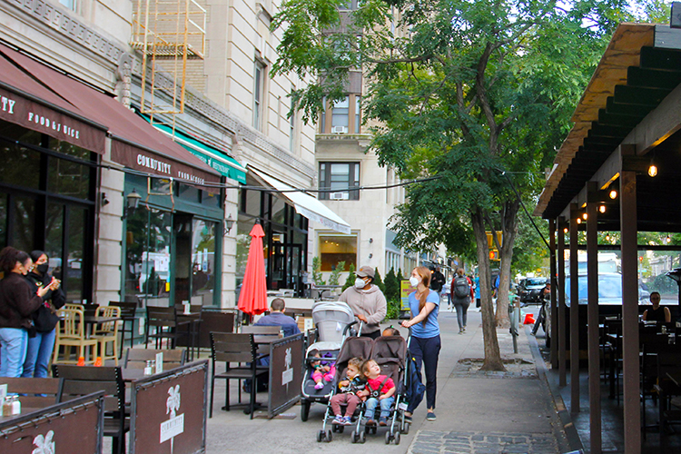
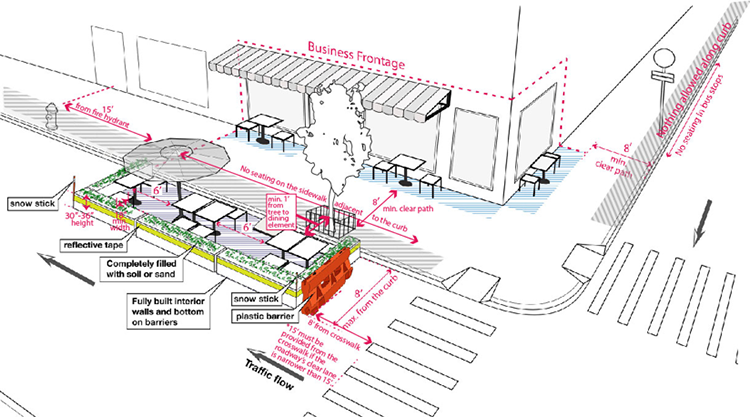

<!doctype html>
<html>
    <head>
        <meta charset="UTF-8">
        <meta name="viewport" content="width=device-width, initial-scale=1">
        <link rel="stylesheet" href="articlesheet.css">
        <link rel="icon" type="image/x-icon" href="img/rice.png">
        <title></title>
        <style>
            @import url('https://fonts.googleapis.com/css2?family=Assistant&family=Cardo:ital@1&family=Frank+Ruhl+Libre&family=Lora:ital,wght@1,600&display=swap');
        </style>
    </head>
</html>
<body>
    <div class='text-container'>
        <h1>Half of the Community Boards in NYC Vote Against the Zoning Text Amendment of Permanent Open Restaurant Program</h1>
        <p class="byline">Reporting & Photo: Chuqin Jiang</p>
        <p class="byline">Date: 10/7/2021</p>
        <p>September 28th is the final date to review the citywide zoning text amendment of sidewalk cafe for all the community boards. Among 28 community boards that publicized their decisions, only four are fully support of this plan. In Manhattan, two out of seven boards voted for it, with one in conditional favor, three unfavorable and one no objection. In other four boroughs, nearly half of the community boards voted unfavorable.</p>
        <div class="picture">
            
        </div>
        <p class="caption">Data source: NYC Department of City Planning</p>
        <p>This is the first legal change required by Permanent Open Restaurant Program (POR), which is expected to start in 2023. However, the result of the community board reviews has already indicated the underlying conflicts. While the emergency version of Open Restaurant Plan does provide a lifeline for restaurants and upwards of 100,000 jobs during the pandemic, it raises residents’ and other business owners’ concerns. Noise, garbage, parking, as well as the blurring line of enforcement lead some people to doubt the necessity to make it permanent.</p>
        <p>“The main concerns are the broad stroke of making this possible everywhere.” Said Laura Sewell, who has been living in the East Village since 1986. She mentioned on the East Ninth Street, there are many overlay of commercial and residential areas. “When those turned over to just a shoe store or a jewelry store, that wasn't a concern to residents. Because it's still closed early. They don't make noise late at night; they don't have big trucks delivering supplies; they don't have garbage picked up in the middle of the night.” </p>
        <p>On July 13th, opponents of the outdoor dining programs packed into Manhattan Community Board 3 meeting and <a href='https://www.youtube.com/watch?v=EaDHc1DLnCA&t=2923s'>shouted down</a> the presentation by Department of Transportation. On September 28th, the CB3 voted unfavorable to the plan, with a gap of merely 6 votes.</p>
        <p>“We do not believe a one-size-fits-all policy is right for the East Village.” Sewell emphasized in her testimony in the full board meeting on Tuesday, “Much of the commercial space on our residential side streets is grandfathered non-conforming, it can remain as long as it's consistently leased but it cannot expand.”</p>
        <p>The zoning text amendment aims to remove geographic restrictions to sidewalk café. Before the pandemic, sidewalk café was prohibited from certain zones, like residential areas. And in Midtown, there are areas where only small cafés and unenclosed cafés were allowed. In the last year, over 2,500 restaurants applied for outdoor dining that would not have been eligible under the current rules. </p>
        <div class="picture">
            
        </div>
        <p class="caption">Source: screenshots from the presentation done by NYC Department of City Planning</p>
        <p>“The proposed zoning text amendment will really seek to cut the tape, expand eligibility and streamline the process for restaurants to expand into the sidewalk. So, they can serve meals and drinks to New Yorkers, while safely conducting their businesses,” said Albert Silvestri, Queens Deputy Borough Commissioner at NYC Department of Transportation, in a presentation to introduce the program. </p>
        <p>Last year, the city put a ban on indoor dining as a result of COVID-19, which ravaged restaurant industry hard. During the summer of 2020, an emergency plan called Open Restaurant Program was enacted, allowing restaurants to serve food outdoors. According to the Department of City Planning, there are 11895 open restaurants in total until September 29, nearly half of which had seats both on sidewalks and roadways. 5759 open restaurants are located in Manhattan, accounting for 48%. The number was only 1252 in the whole city before the pandemic.</p>
        <p>In October of 2020, the New York City Council voted to make this program permanent.</p>
        <div class="picture">
            
        </div>
        <p class="caption">Some open restaurants only left a meter width for pedestrians to pass.</p>
        <div class="picture">
            
        </div>
        <p class="caption">Two parents with three baby carriages are walking in front of an open restaurant.</p>
        <p>The rejection of the zoning amendment, however, doesn’t mean the establishment bothering resident now can be taken down in a short time. They are still qualified until the winter of 2022. New application process for the permanent program will begin in 2023. So, there is still one year for DOT to design more detailed guideline, according to the timeline given out by DOT.</p>
        <p>“What we're in conversations about is how do we make sure that this program translates from a pandemic time when there were hardly any cars on the street, when people were hardly ever out, when a lot of people were actually not even in the city. And how do we make sure that this is something that can work within New York City being back to ‘normal’.” Explained Kyle Athayde, Chair of Manhattan Community Board 6. CB6 has no objection to the citywide text amendment.</p>
        <div class="picture">
            
        </div>
        <p class="caption">The current design guideline for an open restaurant   Source: Department of Transportation</p>
        <p>There are also residents who urge the community board to participate more. Samuel Zimmerman, a resident who live in the East village, believed that the city is going to enact permanent open restaurants program anyway. “So, the question for the community board is whether it wants to be a partner in that process to improve the program, or if it's going to oppose and potentially have its opinions brushed aside.”</p>
        <p>Among those community boards that are unfavorable of the amendment, one reason cited often is the low level of CB’s participation. In Manhattan CB4’s letter, it said that “The failure of DCP to engage with the community or the Board before formulating the proposal, coupled with the fact that operational guidelines by the Department of Transportation have not been developed or even discussed with the larger community, were added reasons for the Board to recommend the text amendments be rejected.”</p>      
        <p>Manhattan CB2 also “strongly recommended that community boards be given an opportunity to review, comment and make recommendations on the POR text amendment in tandem with the DOT rules.”</p>
        <p>“One of the things that came out of that discussion is…how do we build in those nuances to make sure that this is something that’s beneficial to the businesses but also beneficial to the community and isn't too disruptive to their way of life,” concluded Athayde.</p>
        <p>Now, the Open Restaurant proposal is on the agenda for a public hearing at the City Planning Commission (CPC) on October 6th. If the CPC votes in favor of a proposal, it will move on to the City Council for a hearing and vote. </p>
    </div>
</body>